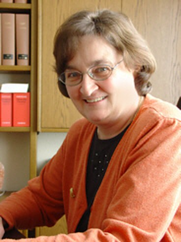

Familienmediation
Wo Beziehungen weitergehen, auch wenn die Partnerschaft endet — etwa als Eltern.
- Trennung und Scheidung
- Umgangs- und Sorgerechtsfragen
- Generationskonflikte
- Familienkonflikte
- Erbauseinandersetzungen
Mediation eröffnet die Möglichkeit einer individuellen Lösung Ihres individuellen Konflikts — vertraulich, außergerichtlich und in Ihrer eigenen Entscheidungsbefugnis.

Als Mediatorin begleite ich Sie als neutrale dritte Person durch das Gespräch. Ich entscheide nicht und ich vertrete keine Seite — ich sorge dafür, dass ein Gespräch überhaupt wieder möglich wird und dass es zu einem Ergebnis führt.
Weil ich zugleich Rechtsanwältin bin, weiß ich, was am Ende rechtlich tragfähig sein muss. Die Vereinbarung, die Sie schließen, ist deshalb keine gute Absicht, sondern belastbar.
Mediation ist ein unkompliziertes Verfahren zur außergerichtlichen Konfliktlösung. Sie eröffnet die Möglichkeit, Konflikte in einem vertraulichen Rahmen zu lösen. Dabei werden die Konfliktparteien von einer neutralen dritten Person begleitet — der Mediatorin.
Durch die fachliche Gesprächsbegleitung wird nicht nur ein Gespräch möglich, zu dem die Beteiligten sich allein nicht mehr in der Lage sehen. Sie sorgt auch dafür, dass dieses Gespräch effizient bleibt und auf eine interessengerechte, zukunftsorientierte Lösung zuläuft.
Sie behalten die Kontrolle. Anders als im Gerichtsverfahren bleibt die Entscheidungsbefugnis bei Ihnen und wird nicht in die Hände eines Dritten gelegt. Am Ende steht eine Vereinbarung, die die Beteiligten im Rahmen der Rechtsordnung eigenverantwortlich schließen.
„Mit dem kann man doch nicht reden!"
Mit diesem Satz wurde schon manche wertvolle Beziehung einfach beendet. Dabei verdient jede Beziehung eine Chance, bevor der Zustand der großen Sprachlosigkeit einsetzt.
Um die Vorteile einer Mediation nutzen zu können, müssen Sie nicht warten, bis das Kind in den Brunnen gefallen ist. Es sind gerade die alltäglichen Auseinandersetzungen, die den Alltag belasten — in der Familie, mit dem Partner oder den Kindern, im Berufsleben mit Kollegen oder dem Arbeitgeber, mit Mitmietern und Nachbarn.
Die Beteiligten stecken fest in bekannten Verhaltensmustern, die einen konstruktiven Austausch unmöglich erscheinen lassen. Endlose, ergebnislose Diskussionen sind die Folge — Diskussionen, von denen Sie schon vorher wissen, dass am Ende nichts steht, weil nur die immer gleichen Argumente ausgetauscht werden.
Den berühmten ersten Schritt geht niemand gern als Erster — und schon gar nicht gern allein. Als neutrale Dritte kann Ihre Mediatorin die Einladung zum ersten gemeinsamen Gespräch aussprechen und damit eine Begegnung auf neutralem Boden ermöglichen.
Dieses erste Informationsgespräch gibt den Beteiligten Raum, aufeinander zuzugehen und zunächst nur zu klären, ob und inwieweit auf beiden Seiten die Bereitschaft und das Interesse an einer Klärung besteht. Es verpflichtet zu nichts Weiterem.
Von der Trennung über den Konflikt im Betrieb bis zur Moderation eines Elternabends.
Wo Beziehungen weitergehen, auch wenn die Partnerschaft endet — etwa als Eltern.
Wer Tür an Tür wohnt, muss auch nach dem Streit noch miteinander auskommen.
Ungelöste Konflikte am Arbeitsplatz kosten mehr als das Verfahren, das ihnen folgt.
Ein eigenes Feld mit eigenen Regeln — zwischen Schülern, Eltern und Lehrkräften.
Auch ohne akuten Konflikt: Sitzungen, die zu einem Ergebnis kommen sollen.
Wir klären, ob Mediation für Ihren Fall geeignet ist. Ohne weitere Verpflichtung.
Alle Streitpunkte kommen auf den Tisch — auch die unbequemen.
Was steht hinter der Position der Gegenseite? Hier entstehen die Lösungen.
Das Ergebnis wird rechtlich belastbar formuliert und festgehalten.
Für ein Informationsgespräch stehe ich Ihnen nach vorheriger Terminvereinbarung gerne zur Verfügung.